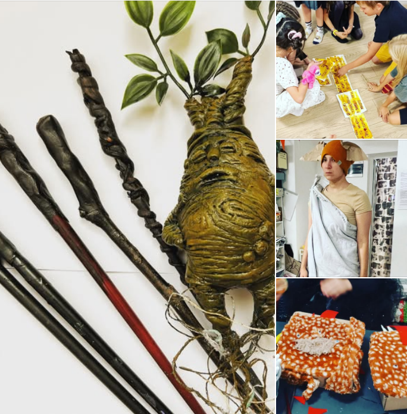
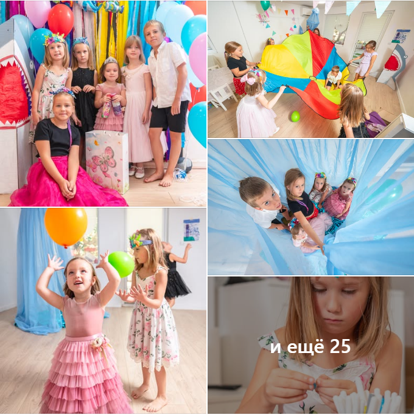

01
Хогвартс
Волшебная тема с творческими деталями.
Праздник, в котором есть место фантазии
Творим, играем,
придумываем вместе.
Тему можно придумать вокруг возраста, интересов и любимых историй ребёнка.
Условия праздника
01 / идея
В Tiny Art Club праздник становится тематической творческой историей. Расскажите, что любит ребёнок, — и мы обсудим подходящую идею.
03 / ваш сюжет
Необязательно выбирать одну из прошлых тем. Расскажите нам возраст ребёнка, его интересы и любимые истории — и мы обсудим подходящий праздник.
Рассказать об идее04 / условия
День рождения
в Tiny Art Club
Возраст и интересы ребёнка помогут выбрать идею праздника.
Обсудить день рождения